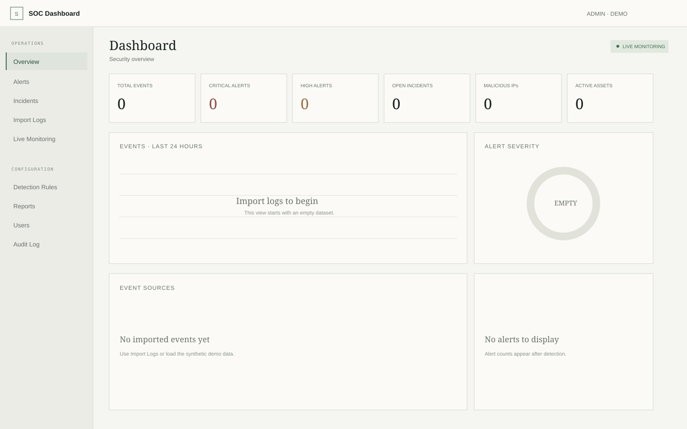

Signals,
with context.
Explore how raw logs become explainable alerts. One small, inspectable SOC dashboard built for learning, demos, and technical conversations.

Start with evidence
you can inspect.
Import Linux authentication logs, Apache or Nginx access logs, and CSV. The parser turns supported lines into events for the same pipeline used by the demo simulator.
Illustrative event summary from the bundled sample. The bundled sample contains these event patterns; the actual app includes a full import interface.
A file becomes a sequence of events.
Auto-detect the format or select it directly. The included sample auth.log contains failed and successful SSH logins plus a sudo event, so the flow is easy to follow without connecting a real system.
Patterns map to
known techniques.
Ten enabled rules cover common learning scenarios. Each rule definition lives in a small JSON file with its threshold, severity, and MITRE ATT&CK technique.
Detection logic stays legible.
Threshold rules use each event’s timestamp, so older log files can be replayed consistently. Immediate rules catch patterns such as suspicious PowerShell, malware indicators, privilege escalation, and web attacks.
A score with its
working shown.
Every alert receives a capped 0 to 100 score. Severity sets the base; repeated activity and a malicious threat-intel result can add points.
Illustrative arithmetic based on the risk engine weights.
See why an alert matters.
The alert detail view lists the score explanation beside related events and its ATT&CK mapping. IP reputation checks use AbuseIPDB when configured and otherwise fall back to a local list.
Five steps, one process.
There is no queue or separate service to configure. The app keeps the path from input to alert straightforward to inspect.
Auth, web access, CSV, or simulator
Format-specific fields normalized
Enabled rules evaluate each event
Severity and supporting signals
Live update, then incident workflow
Built to explain
the decisions.
One Node.js process with Express, SQLite, EJS, Socket.IO, and Chart.js keeps the demo deployable and easy to trace.
Thresholds anchor to event time, so replaying an older log file can produce repeatable results.
IP volume is compared with peer IPs in the same time window, making a basic anomaly rule possible to inspect.
Syslog or agent ingestion, rule editing, per-user session revocation, and Postgres for multi-instance deployment.
Try a sample before you install.
Paste the bundled auth.log into a browser-only preview. Nothing is uploaded.